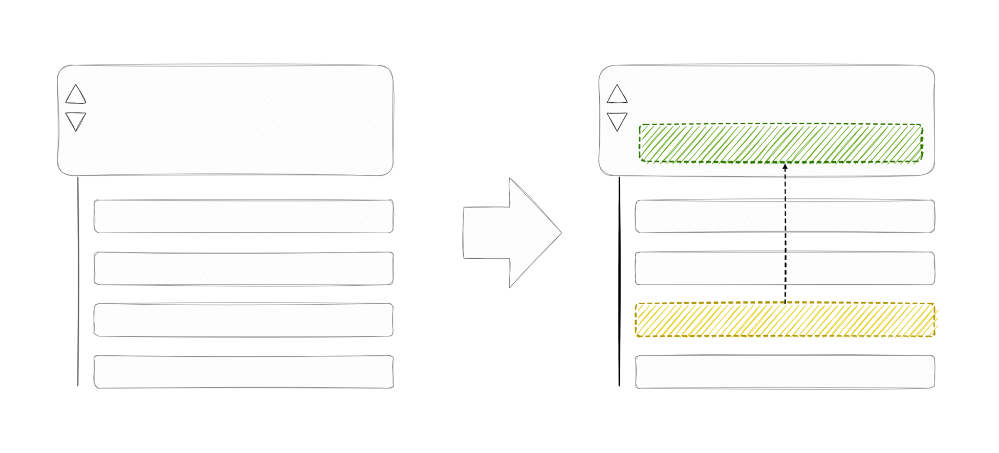
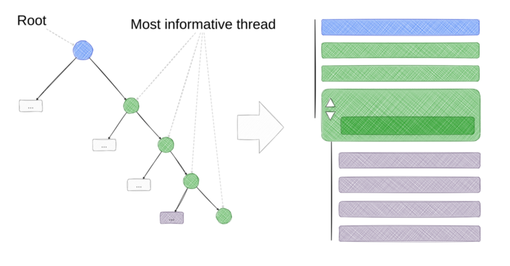

4 Driving Informative Discussions
The most important component of the Global Brain protocol on the thread level is the algorithm that identifies the best reply for any post and promotes it to be its note.

If we do this for all posts and replies, the result is a system of tree-style discussions where users can follow the most informative conversation in any thread by following the best replies on any post.

Of course, users don’t have to follow the top thread. At any point, they might decide that another answer is more interesting or helpful to them and follow that thread instead.

4.1 An Informal Argument Model
The Global Brain algorithm’s core objective is to maximize the impact of the best ideas and arguments. We do this by finding the “best” reply to any post to make it its note – the most helpful context shown alongside it. But “best” is a tricky term in the realm of arguments and ideas. What makes an argument “best”? And how do we even know what an argument is if everything is just a post?
Many attempts have been made to formalize debate by creating formal models of claims, propositions, arguments, and other constituents of debate. We deviate from this approach and propose an informal argument model.
The Global Brain does not require a formal model of belief. It doesn’t need posts to be structured as formal propositions or claims. It doesn’t need to know if users agree or disagree with posts.
The only assumptions are:
- Upvotes and downvotes define a single dimension across which content is evaluated and there is a common understanding among users about what upvotes and downvotes mean.
- The direction of Users’ votes is causally related to their underlying beliefs about the topic of the post that we cannot observe (latent variables).
By making these assumptions about the causal relationship between beliefs and votes and then watching how exposure to notes causes changes to votes, we can model underlying beliefs and predict how exposure to a note will cause changes to these beliefs, which will cause changes to other beliefs, and so on.
4.2 What is the “Best” Reply?
The best reply in our approach is the most convincing one. We quantify the degree to which it is convincing by measuring which reply most likely changes the voting behavior on that post.
First of all, we need to observe the voting behavior on posts. We do this by keeping a tally of upvotes and downvotes for each post. In addition to that, we also keep track of tallies of post/note combinations. This means that we keep track of how many upvotes and downvotes each post received when a note was shown alongside it.
By comparing the voting behavior on a post with and without a note, we can estimate the causal effect of showing a note on the voting behavior on that post. In the next chapter, we will introduce how we estimate upvote probabilities from these tallies.